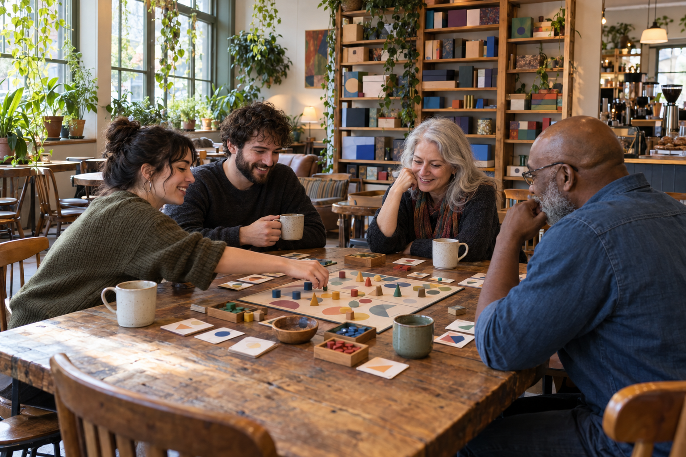

Your coffee run just turned into a side quest.
Side Quest Coffee Co. is a neighborhood coffee shop in Juniper Falls with shelves full of board games, card games, dice, and chess sets. People come in for a coffee and somehow end up staying two hours, playing something with people they just met.
You were on your way somewhere else. You ended up having an unexpectedly good afternoon. That's the Side Quest idea.

Hours
| Monday | 7:00 AM to 9:00 PM |
|---|---|
| Tuesday | CLOSED |
| Wednesday | 7:00 AM to 9:00 PM |
| Thursday | 7:00 AM to 9:30 PM |
| Friday | 7:00 AM to 10:00 PM |
| Saturday | 8:00 AM to 10:00 PM |
| Sunday | 10:00 AM to 6:00 PM |
Yes, we're really closed on Tuesdays. That's our day for deep cleaning, inventory, and staff training.
Visit Us
Address
17 Lantern Lane, Juniper Falls, TX 71234
Phone
(555) 013-7712
Email
hello@sidequestcoffee.example
No Experience Required
You don't need to be "a board-game person" to hang out here. Some of our customers play every week. Some haven't played anything since Monopoly when they were ten. Both are welcome.
Our regulars include students, game groups, remote workers, parents, neighbors, and people meeting up for business. Come to work, come to meet someone, or come to play. Board games, cards, dice, and chess: no screens required.
Menu Favorites
Delicacies that keep people coming back for more!
Weekly Events
Open Table Thursday
Every Thursday, 6:30 to 9:30 PM
Our biggest regular event. Bring your own game or grab something from our shelves. It's completely fine to come alone.
Chess & Coffee
Every Sunday, 11:00 AM to 1:00 PM
Casual chess. You absolutely do not have to be good at it.
Learn-a-Game Night
First Wednesday of each month, 7:00 to 8:30 PM
Someone from our staff picks a game and teaches it. A great place to start if you like the idea of tabletop games but don't know where to begin.
Curious what's on the shelves? Visit The Game Shelf.